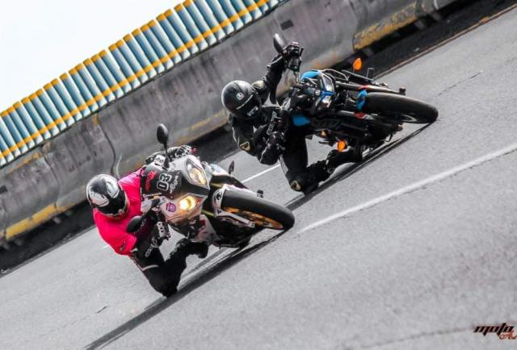

Tomando como referencia cifras encontradas dentro del documento Incidentes Viales Reportados por C5, específicamente del 2019 al 2021, es que sabemos que en estos años hubo un total de 21 mil 488 accidentes viales con motociclistas; siendo el sábado el día de la semana que mayores accidentes registró con 3 mil 778.
La necesidad de transporte y de mejorar los tiempos de traslado entre viajes, el crecimiento del congestionamiento vial y los incrementos al precio de la gasolina, son solo algunos de los factores que inciden en el constante incremento en el uso de las motocicletas dentro de la Ciudad de México. A pesar de los estragos que dejó la pandemia de Covid-19, o tal vez gracias a ellos, la venta de motocicletas en México aumentó considerablemente. Según datos obtenidos del INEGI, el tipo de vehículo que mayor incremento tuvo entre los años 2018 y 2019, fue justo el de las motocicletas, con un 12.8 por ciento.
Estas ventas no hicieron más que aumentar durante el primer trimestre del 2021; al igual que el número de accidentes que estas provocan. Tomando como referencia cifras encontradas dentro del documento Incidentes Viales Reportados por C5, específicamente del 2019 al 2021, es que sabemos que en estos años hubo un total de 21 mil 488 accidentes viales con motociclistas; siendo el sábado el día de la semana que mayores accidentes registró con 3 mil 778.
A pesar de que los incidentes fueron a la baja durante el periodo de confinamiento, es decir, la mayor parte del 2020, en 2021 volvieron a incrementar, incluso más que en el 2019. Debemos señalar la importancia de regular estos vehículos con relación a la velocidad con la que los usuarios conducen. Es un hecho que todos los días mueren personas en motocicleta en accidentes de tránsito y en las carreteras mexicanas, una regulación a estos vehículos merece una atención del Estado.